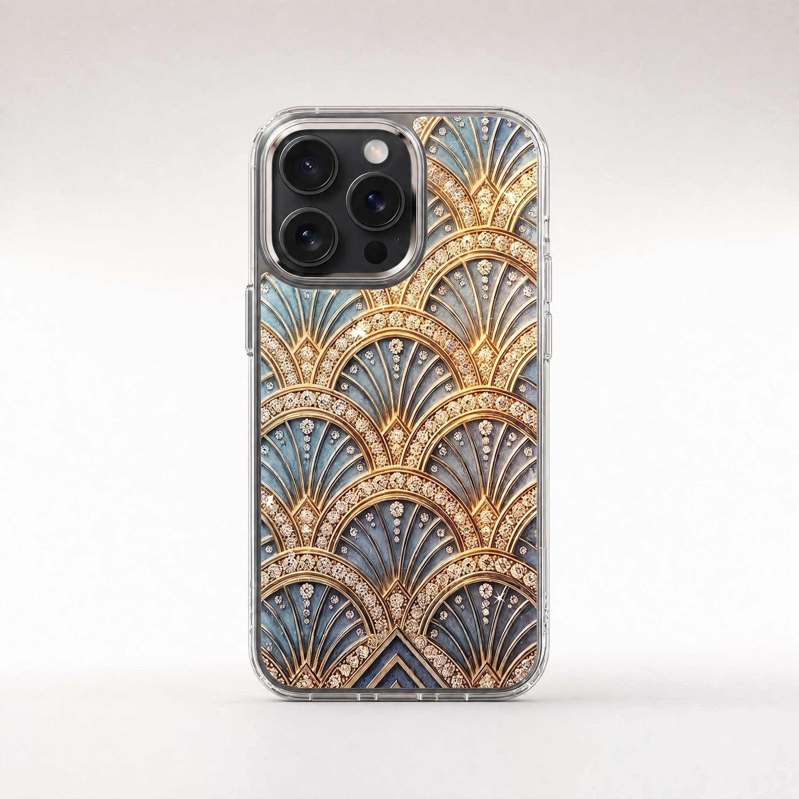
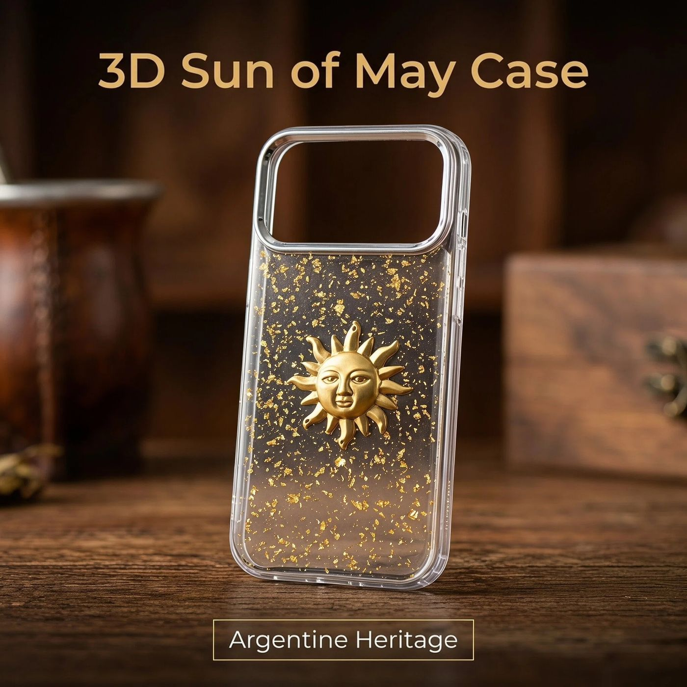

DUYIO · Guangzhou
Diseños originales, plasmados en cada funda.
Accesorios y regalos originales, inspirados en la cultura — diseñados internamente, fabricados a través de una red gestionada de más de 500 fábricas en toda China, nunca revendidos a partir del molde de otra marca.

Art Déco de Lujo — #DYF2445Explora por Cultura
Elige una historia, luego un diseño.
Cada colección se construye en torno a una cultura o una idea estética — no es un almacén de productos sin relación entre sí. Empieza por el mercado al que vendes.

Fútbol, bandera y rituales cotidianos — los símbolos más reconocibles de Argentina, plasmados en fundas que los clientes de un comprador usan porque significan algo, no solo por el color.

Geometría azteca, glifos mayas, calaveras Catrina y más — el patrimonio de diseño de México, grabado con láser en dos materiales de funda: una funda biodegradable de paja de trigo y una funda de silicona líquida forrada en felpa.
Geometría de la era de la máquina en azul pizarra y dorado, con pedrería colocada a mano — el diseño de lujo insignia del estudio.

Lazos, perlas y encaje en una suave paleta pastel — un diseño expresivo, ideal para regalo, pensado para una clienta guiada por la estética.

Pétalos reales prensados y sellados en resina — un diseño romántico e inspirado en la naturaleza, sin bandera ni fanatismo asociado.
Destacados
Algunos para empezar.

Un elegante retrato de calavera de azúcar de La Catrina, enmarcado por una corona de flores de cempasúchil y un fino trazo de encaje, grabado con láser en contraste tonal sobre una funda de silicona suave al tacto.
Un emblema dorado en relieve del Sol de Mayo sobre un dorso transparente con láminas doradas — el símbolo nacional más reconocido de Argentina, llevado directamente.

El águila, la serpiente y el nopal del emblema nacional de México, grabados con láser sobre una funda de silicona suave al tacto.
Lazo impreso en 3D, perlas y encaje en una paleta pastel balletcore — nada pegado, nada se despega.
Cómo Trabajamos
Más de 500 fábricas. Un solo estudio que las coordina.
No somos dueños de ninguna fábrica — eso es precisamente lo que nos permite dirigir la red en lugar de estar limitados por ella. Cada diseño se asigna al especialista que mejor lo fabrica dentro de nuestra red de más de 500 fábricas en toda China, según el material y el proceso, en lugar de depender de una sola línea de producción. Nosotros controlamos el concepto, la aprobación de muestras y la inspección; la red fabrica según nuestras especificaciones.
-
I.
Diseño
Concepto y arte original, desarrollados internamente en torno a una idea cultural o estética.
-
II.
Muestreo
Nuestro socio de producción fabrica una muestra física a partir del arte aprobado.
-
III.
Revisión del Equipo
Nuestro propio equipo inspecciona y aprueba cada muestra antes de pasar a producción en volumen.
-
IV.
Producción Gestionada
La fabricación en volumen se realiza con el socio adecuado dentro de nuestra red de más de 500 fábricas, según el proceso que exige cada diseño.
-
V.
Inspección Previa al Envío
Cada pedido se inspecciona antes de salir de la planta del socio.
Trabajamos así de forma intencional, no por defecto: no ser dueños de ninguna fábrica significa que nunca estamos limitados a lo que una sola línea de producción puede hacer. Un especialista en fundido de resina fabrica las fundas; un taller de galvanoplastia se encarga de los marcos metálicos; un taller de bordado se encarga de las piezas textiles — dirigimos cada diseño a la fábrica de la red que mejor domina ese proceso, y exigimos a todas ellas el mismo estándar de muestra e inspección.
El Equipo
Siete personas detrás de cada pieza.
Un equipo pequeño, cada persona a cargo de una parte del proceso, desde el concepto hasta la entrega.
Define la dirección de diseño del estudio y lidera las alianzas con compradores de todo el mundo.
Dirige el flujo de producción diario; su experiencia en manufactura de artículos de cuero premium define nuestros estándares de materiales.
Gestiona todas las alianzas con clientes de habla hispana — algo natural, dado que muchos de nuestros diseños se inspiran en la cultura latinoamericana.
Mantiene cada pedido en marcha según el calendario, desde la muestra confirmada hasta la caja enviada.
Gestiona la red de socios que convierte nuestros diseños en piezas terminadas.
Investiga estéticas emergentes y aporta nuevos temas de diseño al estudio.
Establece y hace cumplir el estándar de inspección que todo diseño debe cumplir antes de enviarse.
Creemos algo exclusivo.
Cuéntanos la cultura, ocasión o historia que quieres que lleve tu próximo accesorio — la convertiremos en un diseño muestreado y listo para producir.
+86 185 2039 9195
support@duyio.com
Guangzhou, China